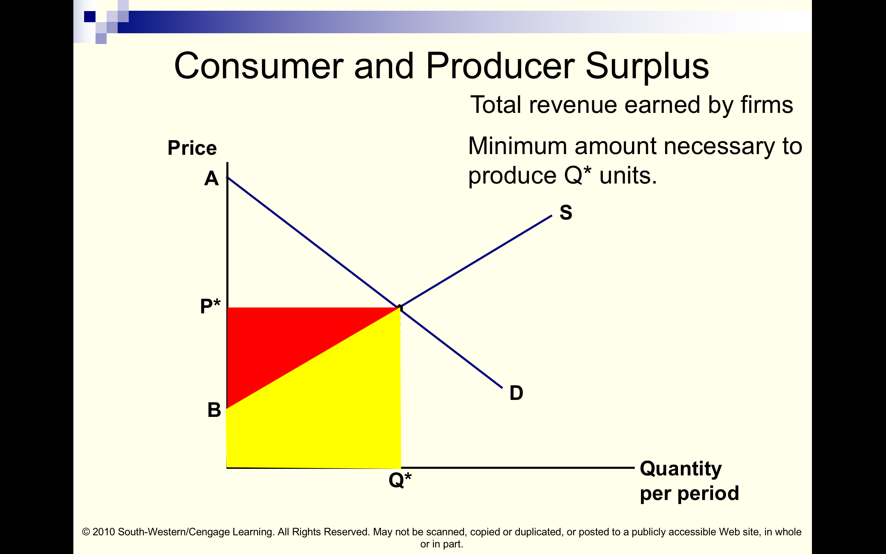
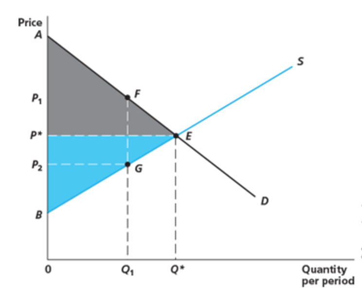

7 Perfect competition in a single market (L6)
7.1 Perfect competition in a single market - coverage
- NS: Ch 9 (parts)
Key goals of this chunk
- Understand how firms’ supply curves aggregate to a market supply curve?
- Revise: what is a ‘perfectly competitive market’?
- Understand the importance of entry and exit in such a market, and the implications for the short and long run:
- firms’ economic profits
- market price and
- reaction to a shift in the demand curve
- Understand what a long run market supply curve might look like, and why
- Understand consumer surplus and producer surplus and the implications for welfare analysis
- Understand the concept of Pareto Optimality
- Learn the argument for why a perfectly competitive market may lead to a Pareto Optimal outcome (under certain conditions)
- Understand the critiques of this, and the idea of ‘market failure’
Motivating questions
- With many ‘price taking firms’, how does aggregate supply respond to changes in demand?
- Can such firms make a profit in the short run? In the long run?
- If demand for a good increases (demand curve shifts out), because preferences change, or because population increases,
- … should we expect the price of the good to rise in the short or long run?
Deeper:
Should we expect ‘competition’ to lead to the most efficient outcomes, and if so, when and under what conditions?
Would it be better to restrict the entry of firms, or have a single firm with a guaranteed monopoly?
Would it be better to restrict or regulate prices?
These questions are at the core of political and economic debates throughout the 19th and 20th century. Mercantilists vs physiocrats (classical liberals), Socialists vs laissez-faire debates over ‘industrial policy’ and ‘trust-busting’, etc
‘’Urgent’’ question: Brexit66
Trade with EU countries may default to WTO terms. There may be very large tariffs on some goods, ‘non-tariff barriers’ on others. UK (and EU) firms face an unknown impact on input prices, demand curves, competition, etc.
Can ‘General Equilibrium (GE) models’ help predict these and help firms plan and reoptimise? How long will it take to return to some ‘equilibrium’?
- Fewer firms in UK markets \(\rightarrow\) less competition \(\rightarrow\) loss of consumer surplus?
We will have to decide on many new regulations bundled with new trade deals:
- Which of these are ‘pro-competitive’ or redress market failures and which restrain trade?
Skip the NS material on ‘Pricing in the very short run’
7.2 SR supply
Number of firms in the market is fixed: no entry/exit
Existing firms will respond to demand shifts by changing their quantity supplied
Market supply curve: sum of each firm’s supply curve
Under perfect competition each firm
- must charge the market price \(P^*\)
- produces q so that \(mc(q)=P^*\)
- as long as there is some output q where \(AVC \leq P*\)
Thus, for every price \(P^{*}\), each firm produces the \(q\) where \(mc(q)=P^{*}\).
This implies that its marginal cost curve is its supply curve!
(except where \(AVC(q)>P^*\) for all q; where it produces zero)
- (except where \(AVC(q)>P^*\) for all q; where it produces zero)
Note: Where the minimum AVC exceeds P*, the firm has no way to produce profitably, so it will produce nothing.
For a further revision, this process is well mapped out in a step-by step Powerpoint you can download here.
Start from the beginning, this is specifically referred to beginning on about slide 20 ‘The Firm’s Long-Run Decision to Exit or Enter a Market’; use ‘presentation mode’.
However, note that slide 19 states ‘the firm considers its sunk costs when deciding to exit, but ignores them when deciding whether to shut down.’ This is not stated precisely. They are referring to those ‘fixed costs’ which must be incurred at regular intervals (e.g., a license fee every year)… from the pov of midyear, this years’ license fee is sunk, but next year’s is not.
To get the market supply curve:
Sum each firm’s supply curve horizontally (recalling that a price-taking firm’s supply curve is the relevant part of its MC curve).
This is shown below:

7.3 SR Price determination
Sum each firm’s supply curve (part of MC curve) to get the market supply curve.
Next sum individual demand curves to get the market demand curve.
There is a sense in which this resembles game theoretic Nash equilibrium. This price leads firms to produce quantities such that they can sell all their output; they don’t want to ‘deviate’ to producing more or less. Consumers can buy all they want to at this price; no incentive to ‘deviate’ by offering a producer more money to supply an extra unit.
This price may be above average variable or even average total costs for many firms (\(P^*>AC\))
\(\rightarrow\) They can make real economic profits! (But only in the short run.)
To avoid confusion, recall that firms are producing where their marginal costs equal the market price. MC are often assumed to increase as quantity increases; this means that only the cost of the last unit produced equals \(P^*\).
Previous units had marginal costs below \(P^*\). Thus average (variable) costs may be below \(P^*\)
7.4 Illustration of SR price determination


Price signal
The price acts as a signal (leading to efficient choices):
- to firms, telling them ‘how much to produce’
It tells them: ‘’Don’t produce past the point where your marginal cost exceeds the price you can get in the market.’’
At the price where the market ‘clears’ \(Q_d=Q_s\).
It also acts as a signal to consumers, telling them ‘how much to purchase’
…and ‘which consumers should obtain the units produced’?
By the definition of the market-clearing price \(P^*\), consumers can buy all they desire at P.
I.e., they can buy units until the last unit they buy gives them a marginal utility of \(P^*\).
This foreshadows a result we will come to later, the efficiency of equilibrium outcomes (under given conditions).
The above result means that each consumer values the last unit they consume at the same amount.
Thus, we never have that the ‘wrong’ consumer obtains the good;
which implies there can be no further gains from ‘exchange among consumers’.
Thus, we never have that the ‘wrong’ consumer obtains the good.
This in term implies there can be no further gains from ‘exchange among consumers’.
If prices were too low (e.g., because of a price ceiling), implying \(Q_d(p)>Q_s(p)\), then demand would have to be rationed, and consumers who valued the product more than other consumers might not get as much.
7.5 Shifts in S and D curves
(See NS text; this is revision, to some extent.)
7.6 The Long run
Here we assume ‘free entry and exit’ of firms, and a large number of firms have access to the same production process.
Suppose there are positive economic profits in an industry (for efficient producers)67
I.e., suppose \(P^*>AC(q)\) for some q. This implies the following process.
\(\rightarrow\) Firms enter
\(\rightarrow\) Supply curve shifts out
\(\rightarrow\) equilibrium price declines
\(\rightarrow\) profits decline
the above process continues until economic profit falls to zero
i.e., until \(P^*=AC(q)\) for the minimum AC q
Remember, economic profits are profits after subtracting the (opportunity) cost of capital, management, and other inputs.
Did you enjoy watching these dominoes fall? We can do it in the opposite direction too.
Now instead suppose there are negative economic profits in an industry (for efficient producers) I.e., suppose\(P^*<AC(q)\) for any q. This implies the following series of events:
\(\rightarrow\) Firms exit
\(\rightarrow\) Supply curve shifts inwards
\(\rightarrow\) equilibrium price rises
\(\rightarrow\) profits rise
the above process continues until economic profits rise to zero
i.e., until \(P^*=AC(q)\) for the minimum AC q
Long Run Equilibrium
In long run equilibrium:
- Firms choose output to maximize their profits
- Profit max: \(P^* = MC(q)\)
No firms in the market want to exit, and no firms out of the market want to enter
Zero economic profits:
\(P^* = AC(q)\)
Also:
With free entry and exit (and no limits on production)…
All firms in the market must produce the quantity that minimizes their average cost,
and all must have the same average cost.
- I.e., \(P* = min AC(q) = MC(q)\) for any firm in the market
- I.e., the MC curve intersects the AC curve at its minimum point.
- And this is the same average cost for all firms
All firms (in the market) produce the quantity \(q\) that minimizes their AC, and for all firms this is the same average cost.
Why is this the case?
Why is \(P* = min [AC(q)] = MC(q)\)? Which implies…
no profit in equilibrium and firms produce at P=MC.
and thus implies that \(P*=AC(q)=MC(q)\) for all firms in the market.
Answer ‘by contradiction’:
Suppose here that a firm were producing at a point above it’s minimum AC,
i.e., suppose \(AC(q)> min [AC(q)]\).
This firm could instead produce at the q that minimised its AC, and make a profit (contradicting the above)
… (and so would other firms, who’d be induced to enter)
We assume a large number of firms have access to this efficient technology.
As previously mentioned, entry shifts the supply curve out, equilibrium price falls, until the point where \(P^*=AC(q)\) for firms producing at this lowest AC point.
7.7 Long Run (LR) Supply (*)
We have the SR supply curve (upward sloping). But we know that in the long run this will shift out in response to a price change. Taking this shift into account gives us the Long Run Supply Curve.
To avoid confusion, note:
In the SR there are movements along this curve in response to price changes.
In the longer run, it does shift in response to price changes, as firms enter.
The LR supply curve, which we will now define, does not shift in response to price changes
But other things may cause it to shift, like changes in input costs
So what will the LR supply curve look like?
- If demand shifts out, do more enter and produce at the same efficient minimum AC?
- Depends on whether entry and higher aggregate production change the firms’ cost functions
- Input costs may rise; increased demand for scarce inputs, skilled workers and public resources
- (Also, other potential ‘externalities’ between firms, consumers, e.g., network externalities)
DR opinion…68
As alluded to in the introduction, this is relevant when we want to consider the impact of long run population and economic growth
Economic and population growth leads to increased demands for most products (especially natural resources and other primary products). The shape of the LR supply curve tells us whether real resource prices will increase rapidly over time.
The relative slope for different products tells us which prices will rise relative to prices for other goods. E.g., will housing become relatively more or less expensive?
LR Supply: Constant cost case

LR Supply: Increasing cost case

In the above diagram, we have:
Initial market equilibrium: P1, Q1
Increase in demand to D’ \(\rightarrow\) price to P2 in SR \(\rightarrow\) firms produce at q2, profit \(\rightarrow\)
Profit attracts new firms. \(\rightarrow\) costs rise to the levels shown in (b). \(\rightarrow\)
New equilibrium at P3, Q3.
Long-run elasticity of supply: % change in LR \(Q^s\) / % change P

(Various estimates over the years, see text)
7.8 Consumer and producer surplus, efficiency
- Consumer surplus (reprise)
- The extra value individuals receive from consuming a good over what they pay for it. What people would be willing to pay for the right to consume a good at its current price.
- The area between the demand curve and the market price
- Producer surplus
- The extra value producers get for a good in excess of the opportunity costs they incur by producing it. What all producers would pay for the right to sell a good at its current market price.
- The area between the supply curve and the market price
Basically producer surplus is profit + unavoidable costs.
In the short run you cannot shut down and avoid the fixed costs, whether or not you sell any units.
Since you are already incurring these, they don’t count against the benefit you would get from selling at the market price.
- In the long run, profits are zero, and all costs are variable, so producer surplus is zero.
Aside When a firm owns a unique resource it can arguably make a LR profit called a ‘Ricardian rent’. However this could be seen as the return to an asset which should be ‘charged against’ these profits.



In what sense is a competitive market efficient?
Economically efficient allocation of resources: maximizes the sum of consumer and producer surplus. - At market equilibrium there are no more mutually beneficial exchanges
Basically, a competitive market in equilibrium maximizes the sum of producer and consumer surplus.

Q* maximizes the sum of consumer and producer surplus. Any other quantity yields a lower sum.
E.g., at Q1 in the above diagram we ‘lose’ the triangle FEG … this is called a ‘deadweight loss’ (‘DWL’) as it is a loss to society, it just disappears.
We can use these models and concepts to study things like:
- ‘Who suffers from a tax’ in the LR and SR?
- Who gains from technological innovation?
- Who gains and who is harmed by trade restrictions, and do the costs outweigh the benefits?
This is also relevant to rail regulation and music copyright.
7.8.1
Important caveat and discussion point
Should price-taking firms and perfect competition be our ‘baseline’ dominant model? Is it reasonable to assume:
Free entry of firms/no ‘barriers’?
Homogenous products?
Decreasing returns to scale at some point?
These conditions will indeed lead to perfect competition/MC pricing.
But many markets have large entry costs, first-mover advantages, and perhaps continuously increasing returns to scale. This will lead to monopoly or oligopoly in the absence of regulation.
Perhaps even more crucially, most products are also ‘differentiated’; if one firm charges slightly more than another firm, it will still capture the demand from those people whose are ‘close’ to it. People will pay a little extra to not travel as far. They will also pay a little extra to get the product that most suits their preferences. In this case, with free entry, we have something known as ‘monopolistic competition’, which has some of the characteristics of monopoly (e.g., pricing above marginal cost) and some characteristics of perfect competition (e.g., zero long-run profits). This model is another candidate for bring the dominant model; there is an active debate about this!7.9 Some suggested practice problems from Nicholson and Snyder Chapter 9 (12th ed)
‘Micro-quizes’ 9.2, 9.3, 9.4,
‘Problems’: - 9.3a and b - 9.5? - 9.9 a-d?
This seemed to be an urgent question in 2016 when I first wrote this section. It still seems to be an urgent question.↩
For a further revision, this process is well mapped out in a step-by step Powerpoint you can download: https://www.dropbox.com/s/vyvao528job7q0q/fc.ppt?dl=0 (This is specifically referred to beginning on slide 39; use ‘presentation mode’)↩
For a variety of reasons, we shouldn’t always expect the LR curve to be upward sloping. It might also be flat or downward sloping. Thus, if the demand curve for, e.g., microchips or personalised software shifts out, we may see that equilibrium price declines in the long run.↩